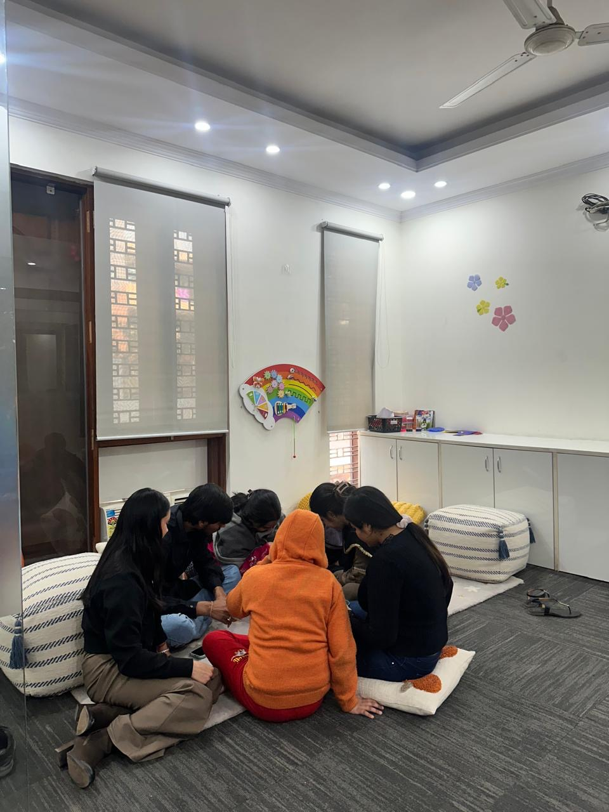
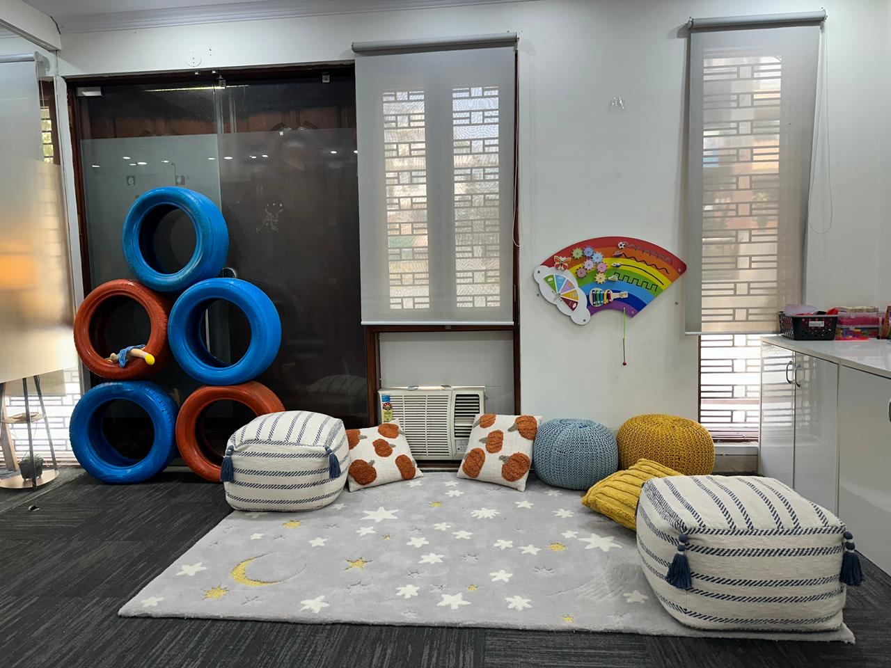

Understand first
Recommendations follow careful listening and assessment—not assumptions.
About Tomotina
Tomotina Kids Development Centre brings education, therapy, movement, creativity, counselling, and family guidance together in one thoughtful environment in Gurugram.

We do not begin with a label or a predetermined program. We begin by listening—to the child, to the family, and to what everyday life currently feels like.
Who we are
Children and adolescents may come to Tomotina for communication, learning, sensory, behavioural, motor, independence, emotional, or social support. Our team considers these needs together rather than treating each skill in isolation.
Assessment and conversation shape a practical plan. Families understand the goals, receive appropriate updates, and participate in regular progress reviews.
Meet the Tomotina teamWhat guides us
Recommendations follow careful listening and assessment—not assumptions.
Goals, activities, pace, and communication reflect the person and family.
Educators, therapists, counsellors, and families share one direction.
Progress is monitored without promising a particular outcome or timeline.

The environment
Our centre includes dedicated areas for learning, therapy, sensory support, creative work, consultation, and movement. The intention is simple: help children feel comfortable enough to engage, practise, communicate, and build confidence.
Tell us what you are noticing and we’ll help you consider a suitable next step.